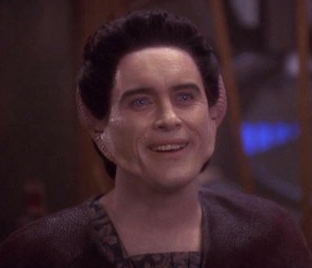
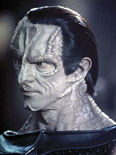
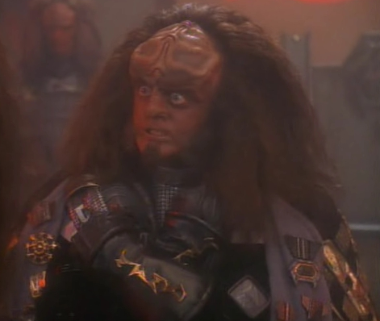
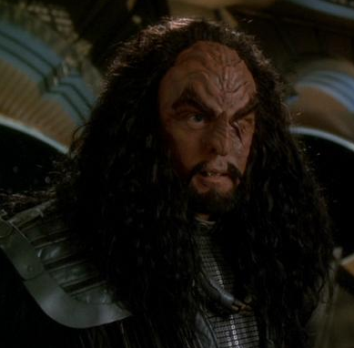

Hover inside of the above picture of Weyoun to make JQuery 1.) display 2 other characters below who at some point acted like they worked for the Dominion and 2.) have the text color change to red and the background color changed to black. Hover out to have the page restore itself to its previous look/behavior when the mouse rolls off the element.



The Founders, Jem Hadar, and Vorta
The Cardassians
The Breen
And at times, the Klingons, sort of, and by accident